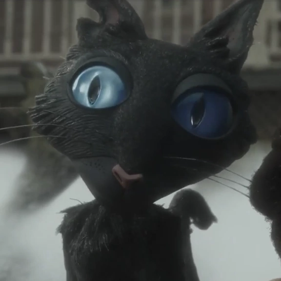

Gato Negro

Este felino negro y esquelético
de ojos azul eléctrico vive en los alrededores del Pink Palace,
y parece llevar allí desde que se construyó. Conoce el peligro
que allí vive, y sabe que si no ayuda a Coraline, acabará como
todos los otros niños desaparecidos... Parece tener poderes
mágicos, pues puede viajar de un mundo a otro sin necesidad
de atravesar el túnel mágico, y además, puede hablar en
el "Otro Mundo".
Le encanta hacerse el enigmático e intrigar a Coraline,
pero es un buen amigo suyo, y aunque se muestra bastante
gruñón y un poco desagradable, es tierno, y un buen amigo.
Odia a la Arpía, igual que Coraline, y está dispuesto a derrotarla pese a que es un poco cobarde.